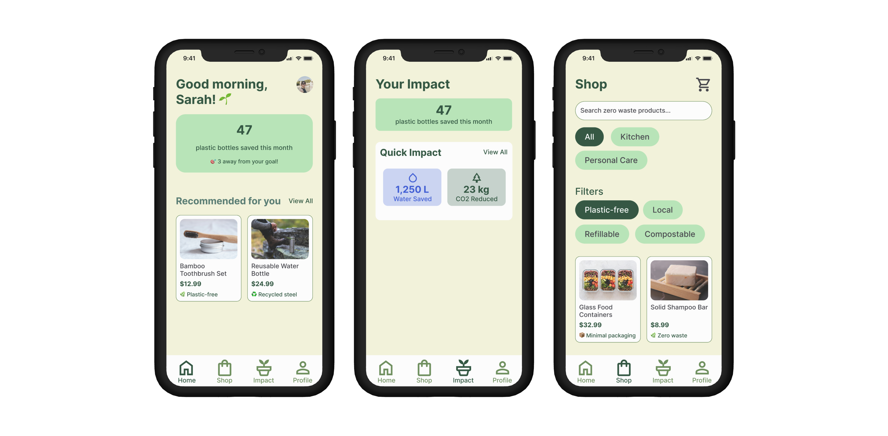
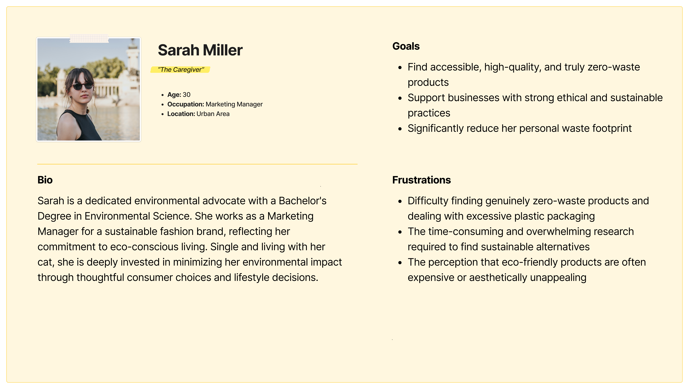
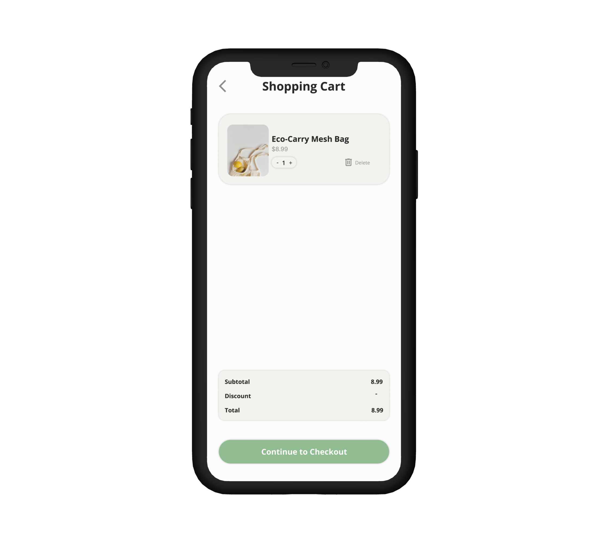
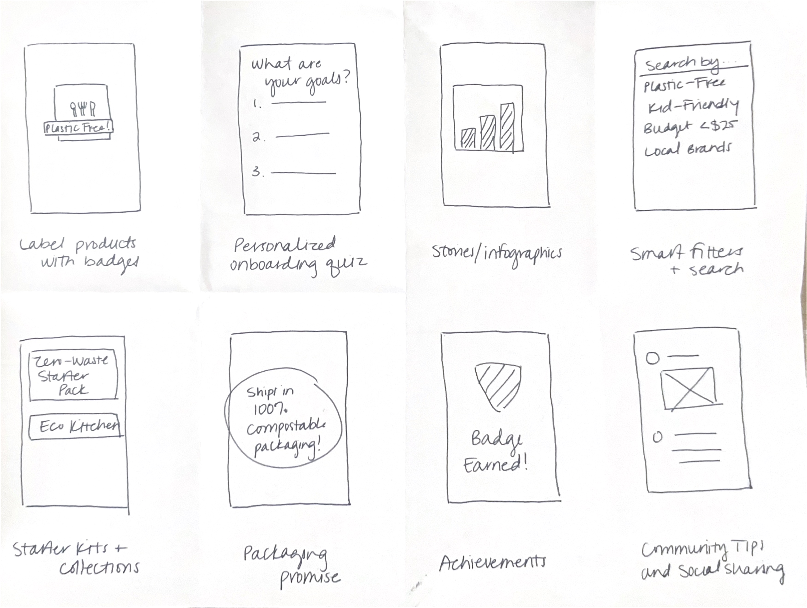

THE CHALLENGE
How can we help eco-conscious consumers make truly sustainable purchasing decisions without the overwhelming research burden?
The United States is facing an environmental crisis. We're on track to run out of landfill space by 2040, yet eco-conscious consumers struggle to find truly zero-waste, ethically sourced products. Despite their genuine willingness to make sustainable choices, environmentally conscious shoppers face three major barriers: rampant greenwashing that misleads them, limited availability of truly sustainable products, and the overwhelming burden of researching every purchase. There is a critical need for an accessible, trustworthy platform that simplifies sustainable shopping and empowers individuals to reduce their waste footprint - before time runs out.
RESEARCH & ANALYSIS
Understanding the passionate environmentalist seeking solutions
Meet Sarah: The Passionate Environmentalist

Through user interviews and surveys, I discovered that eco-conscious consumers like Sarah are highly motivated but face significant barriers. They want to make sustainable choices but struggle with product authenticity, limited time for research, and lack of community support.
Competitive Analysis
I analyzed existing sustainable shopping platforms and identified critical gaps:
- Cluttered interfaces that overwhelm users
- Lack of clear, trustworthy product information
- Missing community features for peer support
- No personalization based on values

Key Insights
My research revealed three core insights:
- Trust is the biggest barrier - users need verified information
- Community support accelerates sustainable behavior change
- Personalization is crucial - one size doesn't fit all environmental values
SOLUTION
UnBoxed simplifies sustainable shopping through transparency, community, and personalization
Transparent Product Information
Clear, verified details on certifications, materials, and ethical sourcing practices. No more guessing if a product is truly sustainable.

Environmental Impact Tracking
Track your positive environmental impact with clear metrics - see how many plastic bottles you've saved, CO2 reduced, and waste diverted from landfills.
Streamlined Checkout
An efficient, friction-free purchase process that makes sustainable shopping as easy as conventional shopping.

DESIGN PROCESS
From research insights to user-centered solutions
Ideation & Sketching
I used rapid sketching techniques like Crazy 8s to explore multiple solution approaches, focusing on reducing cognitive load and building trust through design.

Visual Design System
I developed a design system that conveys trust and environmental consciousness through natural color palettes, clean typography, and intuitive iconography that aligns with users' values.

Prototyping & Testing
I created interactive prototypes to test key user flows, particularly focusing on the product discovery and verification process to ensure users could quickly assess product sustainability.

POTENTIAL IMPACT
Streamlining the path to sustainable living
- Empowered Consumers: The app aims to empower consumers to make informed and sustainable choices by providing them with the tools and information they need.
- Increased Adoption of Sustainable Products: By simplifying the shopping experience and building trust, the app has the potential to increase the adoption of sustainable products.
- Fostering a Community: The community forum will create a sense of belonging and encourage users to support each other on their sustainability journeys.
- Reduced Environmental Impact: By promoting sustainable consumption and supporting eco-conscious businesses, the app can contribute to a more sustainable future.
LEARNINGS & NEXT STEPS
Designing for sustainability requires balancing user needs with environmental impact
Key Learnings
- Trust is the foundation of sustainable shopping platforms
- User-centered design must consider environmental psychology
- Community features are crucial for behavior change
- Simplicity is key when dealing with complex sustainability data
Future Exploration
- Gamify elements to increase engagement
- AI-powered personalized recommendations based on user values
- Integration with smart home devices for seamless sustainable living
- Carbon footprint tracking and reduction goals
- Partnerships with local sustainable businesses to support the community